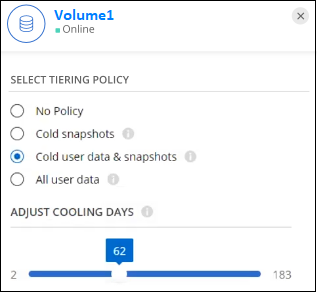

ドキュメントの変更をリクエスト
ドキュメントの変更をリクエスト GitHub で編集
GitHub で編集 寄稿者向けガイド
寄稿者向けガイドオンプレミスの ONTAP クラスタから Azure BLOB ストレージへデータを階層化する
非アクティブなデータを Azure Blob Storage に階層化することにより、オンプレミスの ONTAP クラスタの空きスペースを確保します。
クイックスタート
これらの手順を実行すると、すぐに作業を開始できます。また、残りのセクションまでスクロールして詳細を確認することもできます。
次のものが必要です。
-
ONTAP 9.4 以降を実行し、 Azure Blob Storage への HTTPS 接続を備えたオンプレミスの ONTAP クラスタ。 "クラスタの検出方法について説明します"。
-
Azure VNet またはオンプレミスにインストールされたコネクタ。
-
データセンター内の ONTAP クラスタ、 Azure ストレージ、およびクラウド階層化サービスへのアウトバウンド HTTPS 接続を可能にするコネクタのネットワーク。
Cloud Manager で、オンプレミスの作業環境を選択し、階層化サービスの「 * 有効化」をクリックして、プロンプトに従って Azure Blob Storage にデータを階層化します。
無償トライアルの終了後、従量課金制のサブスクリプション、 ONTAP Cloud Tiering のライセンス、またはその両方を組み合わせて使用したクラウド階層化の料金をお支払いください。
-
Azure Marketplace で配信登録するには、 "Cloud Manager Marketplace の製品に移動します"をクリックし、 * Subscribe * をクリックして、画面の指示に従います。
-
Cloud Tiering BYOL ライセンスを使用して支払う場合は、 mailto:ng-cloud-tiering@netapp.com ？ subject=Licensing [ 購入が必要な場合はお問い合わせください ] のあとに "Cloud Manager Digital Wallet からアカウントに追加します"。
要件
ONTAP クラスタのサポートを確認し、ネットワークをセットアップし、オブジェクトストレージを準備します。
次の図は、各コンポーネントとその間の準備に必要な接続を示しています。


|
コネクタと BLOB ストレージ間の通信はオブジェクトストレージのセットアップにのみ使用されます。コネクタは、クラウドではなくオンプレミスに配置できます。 |
ONTAP クラスタの準備
ONTAP クラスタを Azure BLOB ストレージにデータを階層化する場合は、次の要件を満たす必要があります。
- サポートされている ONTAP プラットフォーム
-
-
ONTAP 9.8 以降： FAS システム、またはオール SSD アグリゲートまたはオール HDD アグリゲートを使用する AFF システムからデータを階層化できます。
-
ONTAP 9.7 以前を使用している場合： AFF システムまたはオール SSD アグリゲートを使用する FAS システムからデータを階層化できます。
-
- サポートされる ONTAP のバージョン
-
ONTAP 9.4 以降
- クラスタネットワークの要件
-
-
ONTAP クラスタが、ポート 443 経由で Azure BLOB ストレージへの HTTPS 接続を開始します。
ONTAP は、オブジェクトストレージとの間でデータの読み取りと書き込みを行います。オブジェクトストレージが開始されることはなく、応答するだけです。
ExpressRoute の方がパフォーマンスが向上し、データ転送コストは削減されますが、 ONTAP クラスタと Azure BLOB ストレージ間では必要ありません。ただしそのようにすることがベストプラクティスとして推奨されます。
-
インバウンド接続はコネクタから必要です。コネクタは Azure VNet 内またはオンプレミスに配置できます。
クラスタと Cloud Tiering Service の間の接続は必要ありません。
-
階層化するボリュームをホストする各 ONTAP ノードにクラスタ間 LIF が 1 つ必要です。LIF は、 ONTAP がオブジェクトストレージへの接続に使用する IPspace に関連付けられている必要があります。
-
- サポートされるボリュームとアグリゲート
-
クラウド階層化が可能なボリュームの総数は、 ONTAP システムのボリュームの数よりも少なくなる可能性があります。これは、一部のアグリゲートからボリュームを階層化できないためです。については、 ONTAP のドキュメントを参照してください "FabricPool でサポートされていない機能"。
|
|
Cloud Tiering は、 ONTAP 9.5 以降、 FlexGroup ボリュームをサポートしています。セットアップは他のボリュームと同じように機能します。 |
ONTAP クラスタを検出しています
コールドデータの階層化を開始する前に、 Cloud Manager でオンプレミスの ONTAP 作業環境を作成する必要があります。
コネクタの作成または切り替え
データをクラウドに階層化するにはコネクタが必要です。データを Azure BLOB ストレージに階層化する場合は、 Azure VNet または自社運用環境にあるコネクタを使用できます。新しいコネクタを作成するか、現在選択されているコネクタが Azure またはオンプレミスにあることを確認する必要があります。
必要なコネクタ権限があることを確認します
Cloud Manager バージョン 3.9.7 以降を使用してコネクタを作成した場合は、すべての設定が完了しています。
以前のバージョンの Cloud Manager を使用してコネクタを作成していた場合は、権限リストを編集して必要な権限を 2 つ追加する必要があります。
Microsoft.Storage/storageAccounts/managementPolicies/read
Microsoft.Storage/storageAccounts/managementPolicies/writeコネクタのネットワークを準備しています
コネクタに必要なネットワーク接続があることを確認します。コネクタは、オンプレミスまたは Azure にインストールできます。
-
コネクタが取り付けられているネットワークで次の接続が有効になっていることを確認します。
-
クラウドの階層化サービスへのアウトバウンドのインターネット接続 ポート 443 （ HTTPS ）
-
ポート 443 から Azure BLOB ストレージへの HTTPS 接続
-
ONTAP クラスタ管理 LIF へのポート 443 経由の HTTPS 接続
-
-
必要に応じて、 VNet サービスエンドポイントを Azure ストレージに対して有効にします。
ONTAP クラスタから VNet への ExpressRoute または VPN 接続があり、コネクタと BLOB ストレージ間の通信を仮想プライベートネットワーク内に維持する場合は、 Azure ストレージへの VNet サービスエンドポイントを推奨します。
Azure BLOB ストレージを準備しています
階層化を設定するときは、使用するリソースグループ、およびリソースグループに属するストレージアカウントと Azure コンテナを特定する必要があります。ストレージアカウントを使用すると、 Cloud Tiering でデータの階層化に使用される BLOB コンテナを認証し、アクセスすることができます。
Cloud Tiering は、ストレージアカウントの汎用 v2 と Premium Block BLOB タイプのみをサポートしています。
BLOB コンテナはにある必要があります "Cloud Tiering をサポートするリージョン"。
|
|
低コストのアクセス階層を使用するようにクラウド階層を設定していて、階層化データが一定の日数後にに移行される場合は、 Azure アカウントでコンテナのセットアップ時にライフサイクルルールを選択しないでください。Cloud Tiering は、ライフサイクルの移行を管理します。 |
最初のクラスタから Azure Blob にアクセス頻度の低いデータを階層化する ストレージ
Azure 環境を準備したら、最初のクラスタからアクセス頻度の低いデータの階層化を開始します。
-
オンプレミスクラスタを選択
-
階層化サービスの * 有効化 * をクリックします。
 オプションを示すスクリーンショット。"]
オプションを示すスクリーンショット。"] -
* プロバイダの選択 * ：このページは、オンプレミスコネクタを使用している場合にのみ表示されます。[Microsoft Azure* ] を選択し、 [* Continue * ] をクリックします。
-
「 * Tiering Setup * 」ページに記載された手順を実行します。
-
* リソースグループ *: 既存のコンテナが管理されているリソースグループ、または階層化データの新しいコンテナを作成する場所を選択し、「 * 続行」をクリックします。
-
* Azure Container * ：ストレージアカウントに新しい BLOB コンテナを追加するか、既存のコンテナを選択して * Continue * をクリックします。
オンプレミスコネクタを使用する場合は、作成する既存のコンテナまたは新しいコンテナへのアクセスを提供する Azure サブスクリプションを入力する必要があります。
この手順で表示されるストレージアカウントとコンテナは、前の手順で選択したリソースグループに属しています。
-
* アクセス層のライフサイクル * ： Cloud Tiering は、階層化されたデータのライフサイクルの移行を管理します。データは _Hot_class から始まりますが、特定の日数が経過したあとにデータを _Cool _ クラスに移動するルールを作成できます。
階層化データを移行するアクセス階層とデータを移動するまでの日数を選択し、 * 続行 * をクリックします。たとえば、次のスクリーンショットは、オブジェクトストレージの階層化データが _Hot_class から _Cool _class に 45 日後に移動されたことを示しています。
「 * このアクセス層にデータを保持 * 」を選択した場合、データは _Hot_access 層に残り、ルールは適用されません。 "サポートされるアクセス階層を参照してください"。

ライフサイクルルールは、選択したストレージアカウント内のすべての BLOB コンテナに適用されます。
必要なコネクタ権限があることを確認します ライフサイクル管理機能の場合。
-
* クラスタネットワーク * ： ONTAP がオブジェクトストレージへの接続に使用する IPspace を選択し、「 * 続行」をクリックします。
正しい IPspace を選択すると、 Cloud Tiering を使用して、 ONTAP からクラウドプロバイダのオブジェクトストレージへの接続をセットアップできます。
-
-
_Tier Volume_page で、階層化を設定するボリュームを選択し、階層化ポリシーページを起動します。
-
すべてのボリュームを選択するには、タイトル行（
 ）をクリックし、 * ボリュームの設定 * をクリックします。
）をクリックし、 * ボリュームの設定 * をクリックします。 -
複数のボリュームを選択するには、各ボリュームのボックス（
 ）をクリックし、 * ボリュームの設定 * をクリックします。
）をクリックし、 * ボリュームの設定 * をクリックします。 -
単一のボリュームを選択するには、行（または）をクリックします
 アイコン）をクリックします。
アイコン）をクリックします。
-
-
_Tiering Policy_Dialog で、階層化ポリシーを選択し、必要に応じて選択したボリュームのクーリング日数を調整して、 * 適用 * をクリックします。

クラスタのボリュームから Azure Blob オブジェクトストレージへのデータ階層化のセットアップが完了しました。
また、クラスタを追加したり、クラスタ上のアクティブなデータと非アクティブなデータに関する情報を確認したりすることもできます。詳細については、を参照してください "クラスタからのデータ階層化の管理"。